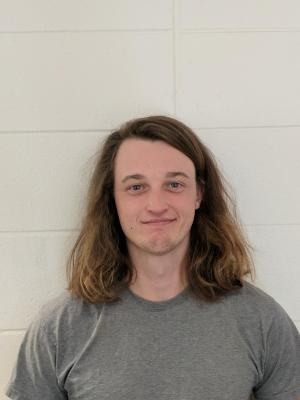
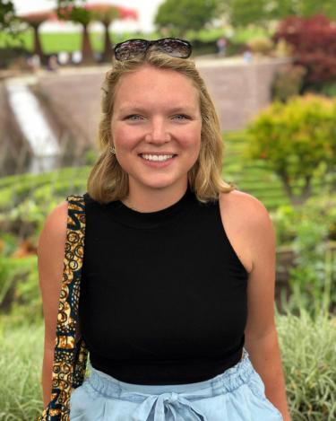
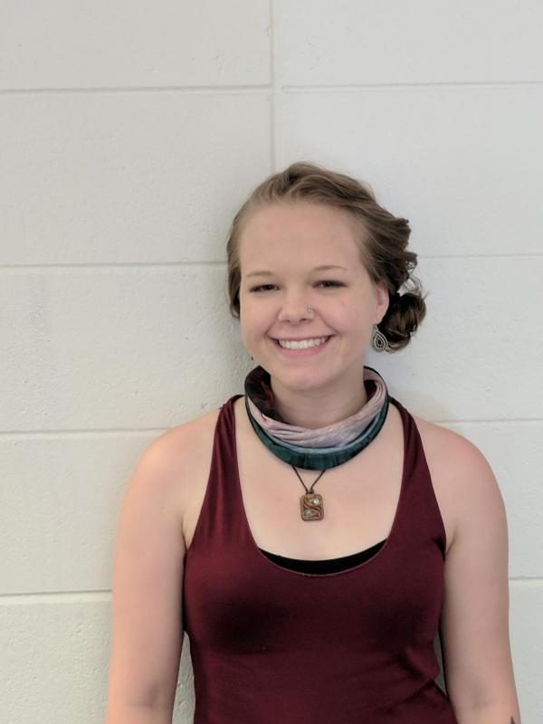

group
EPIC: Exploration of Planetary Ices and Climates

The Exploration of Planetary Ices and Climates (EPIC) group in the Laboratory for Atmospheric and Space Physics (LASP) at CU Boulder investigates the atmospheres and surfaces of icy worlds using numerical models and data from spacecraft and ground-based observatories. We are especially interested in the thermal environments and behavior of volatiles on these bodies, particularly in their polar regions. Our quantitative approach includes the development of numerical heat, vapor, and radiative transfer models with wide applicability to problems in planetary science. Data analysis efforts focus on multi-spectral and hyper-spectral imaging for compositional studies, thermal infrared atmospheric sounding and surface mapping, and inversion techniques.
Our group is composed of researchers at all levels, from undergraduates to postdoctoral scholars. We welcome inquiries for possible opportunities from individuals representing a diverse range of backgrounds. The EPIC group is a welcoming environment, where all perspectives are respected and everyone is valued for their contributions.
Group Members:
| Faculty and Researchers: | |
 Paul Hayne Paul Hayne |
Dr. Paul Hayne is an assistant professor in the department of Astrophysical & Planetary Sciences, and LASP. He grew up near Seattle, Washington. Paul joined the CU faculty in January, 2018, after serving for five years as a research scientist at NASA’s Jet Propulsion Laboratory in Pasadena, CA. Paul earned his bachelor’s and master’s degrees at Stanford University, and his PhD at UCLA (with David Paige). He did his postdoc at Caltech (with Oded Aharonson), where he developed numerical models for investigating the behavior of volatiles on the Moon and Ceres. |
 Ganna (Anya) Portyankina Ganna (Anya) Portyankina |
Dr. Ganna (Anya) Portyankina is a LASP Research Associate, whose research focuses on the seasonal behavior of CO2 frosts on Mars. Anya is from Ukraine. She earned her Master degree in Physics and Astronomy from Kharkiv National University and her PhD, or more precisely, Dr. rer. nat. – Doctor rerum naturalium – in Astrophysics from University of Göttingen in Germany. Anya’s main scientific interest is ices in the Solar System, from Martian polar caps to icy satellites of giant planets. She plans observations and works with data from HiRISE and CaSSIS, and works in the low-temperature labs to simulate environments that can host CO2 ice. |
 Michael Aye Michael Aye |
Dr. Michael Aye is a LASP Research Associate, whose research focuses on innovative data analysis techniques and instrumentation for studying Mars, the Moon, and Saturn's rings. |
 Margaret Landis Margaret Landis |
Dr. Margaret Landis (she/her) joined the EPIC group in June 2019. Her research focuses on water ice in the inner solar system, especially on Mars and Ceres. She earned undergraduate degrees in physics and astronomy, with university honors, at Northern Arizona University in Flagstaff, and completed her PhD at University of Arizona's Lunar and Planetary Laboratory with Dr. Shane Byrne. She has participated on the science team of Mars Reconnaissance Orbiter's High Resolution Imaging Science Experiment (HiRISE) camera and on Dawn, as both a Guest Investigator Student and instrument team member. She completed a post-doc working with Dr. Thomas Prettyman (Planetary Science Institute) on Dawn's Gamma Ray and Neutron Detector (GRaND) data analysis before coming to LASP. |
| Graduate Students: | |
Andrew Wilcoski |
Andrew Wilcoski is a PhD student in the department of Astrophysical and Planetary Sciences. His research is on numerical modeling of the mass balance and evolution of the residual polar ice caps of Mars, and the polar freeze-out of water during a transient atmospheric period on the Moon. |
Noora Alsaeed |
Noora Alsaeed is a PhD student in the department of Astrophysical and Planetary Sciences. Her research focuses on the atmosphere of Mars, particularly the transport and fate of water in the polar regions, using data from the Mars Climate Sounder. |
Kya Sorli |
Kya Sorli is a PhD student in the department of Astrophysical and Planetary Sciences. Her research focuses on the thermal behavior of near-Earth asteroids and particularly binary asteroid systems. Kya's work directly supports NASA's Janus mission. |
| Undergraduate Students: | |
 Tara Tomlinson Tara Tomlinson |
Tara Tomlinson is an undergraduate researcher, whose research uses modeling and observations to better understand impact craters on Europa. |
| Former Members: | |
Raven Larson |
Raven Larson (former graduate researcher) studied impact flashes on the Moon using data from the NELIOTA project. Raven received her M.S. degree in astrophysical and planetary sciences in 2019. |
Shaelyn Raposa |
Shaelyn Raposa (former undergraduate researcher) studies rainstorms on Titan and their effects on surface composition. Shae is now a PhD student at Northern Arizona University. |
 Carlos Eytan Gary Bicas Carlos Eytan Gary Bicas |
Carlos (former undergraduate researcher) hails from Mexico City. His work focused on looking at Mars’ polar snowfall to understand how Mars’ climate might be controlled by the South Polar Residual Cap (SPRC). Carlos is now a PhD student at Stony Brook University. |
 Tyler Horvath Tyler Horvath |
Tyler Horvath (former undergraduate researcher), developed models to simulate thermal conditions inside lunar pits and caves. Tyler is now a PhD student at UCLA. |